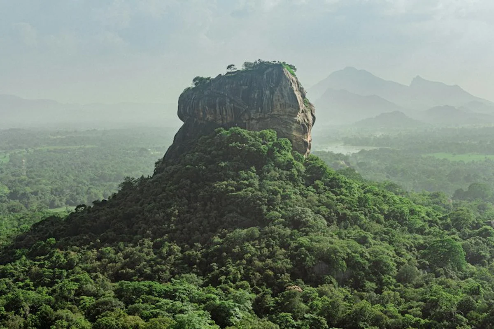
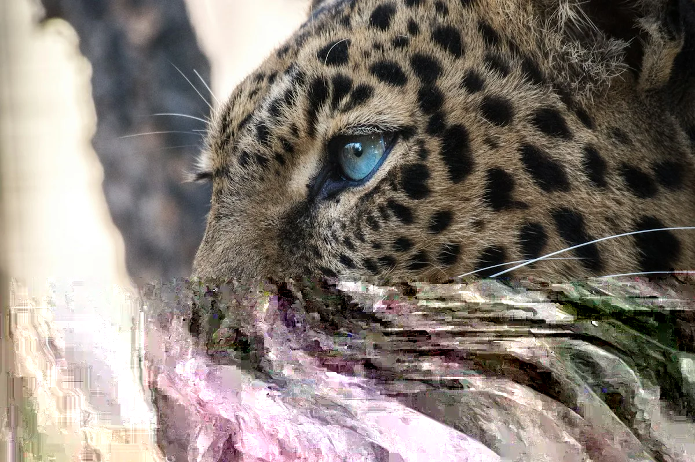
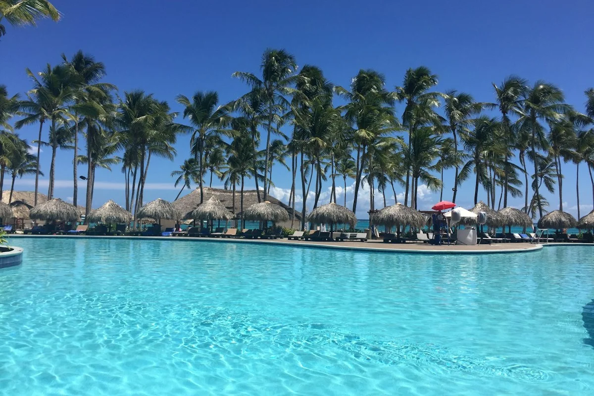
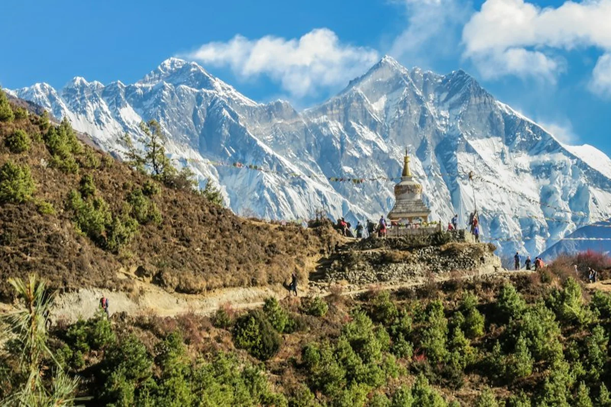
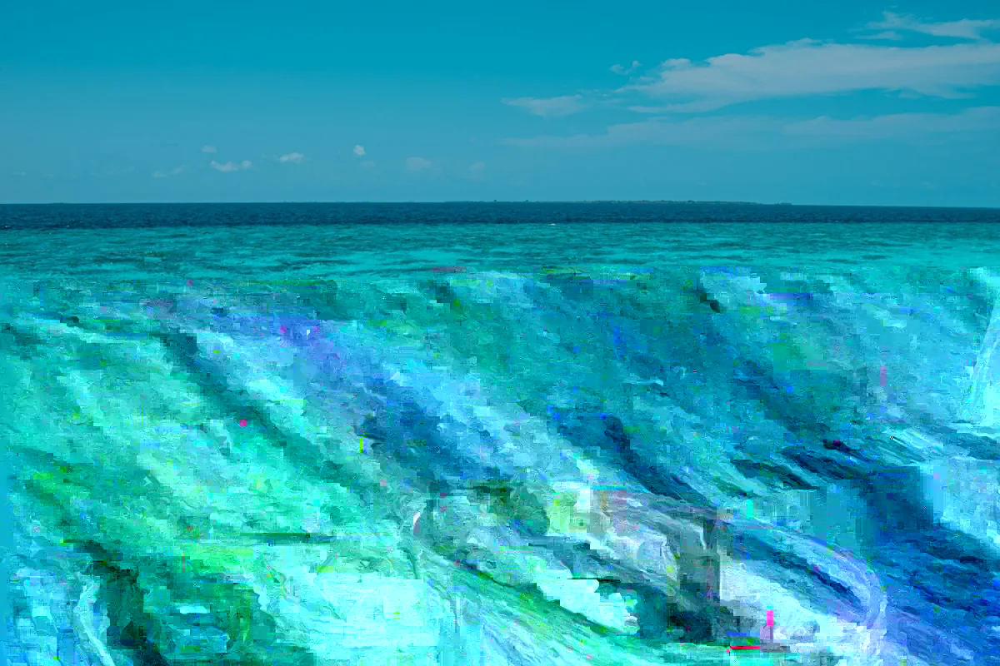
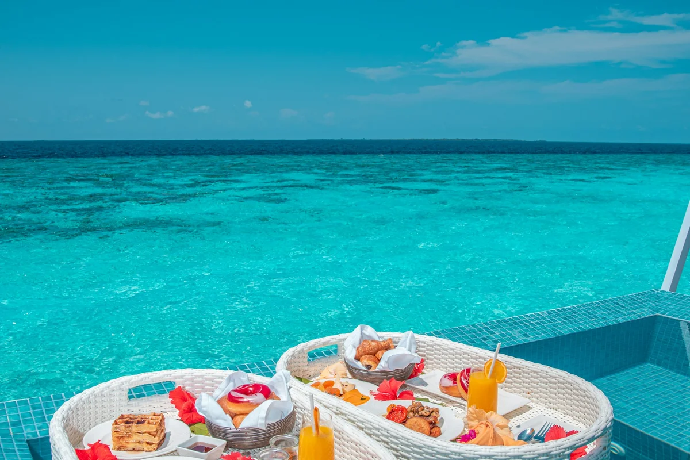

Sacred Sites
Anuradhapura
Ancient capital of great stupas and the revered Sri Maha Bodhi tree.
Explore Destination
➔
lotus ceylon

Inspired by the lotus—a symbol of purity, sacredness, resilience and natural beauty—LOTUS invites you to discover Sri Lanka through journeys that connect you with its nature, culture, heritage and spirit.
LOTUS CEYLON INTERNATIONAL TOURS & SERVICES (PRIVATE) LIMITED is a premier Sri Lankan inbound tourism company dedicated to creating authentic, meaningful and memorable travel experiences across Sri Lanka.
From cultural heritage and sacred Buddhist sites to wildlife, pristine coasts, misty tea mountains, and the world-renowned flavours of Ceylon, we connect travellers with the people, places and experiences that make Sri Lanka unique with deep cultural understanding and genuine Sri Lankan hospitality.
Founded in 2014, Lotus Ceylon was created on a single enduring principle: that travel should be unhurried, deeply personal, and spiritually enriching. We craft private voyages that honor the sacred rhythm of our island and the individual spirit of each traveler.
100% Tailor-Made Itineraries: Every journey is customized to your personal pace, interests, and budget.
Sacred Buddhist & Heritage Guidance: Scholarly access to ancient stupas, sacred relics, and cultural immersion.
24/7 Dedicated Trip Concierge: Seamless airport VIP arrival greeting and around-the-clock coordinator care.
Private Luxury Fleet & Chauffeur Guides: Impeccable air-conditioned vehicles driven by licensed national guides.
Handpicked Eco & Boutique Stays: Audited heritage tea bungalows, Ayurvedic sanctuaries, and luxury seaside villas.
12+
Years of Inbound Excellence
10+
Global Country Representatives
100%
Tailor-Made Private Itineraries
As Sri Lanka’s premier luxury travel specialist, we craft private journeys across eleven signature holiday themes, from tranquil coastal sanctuaries to ancient UNESCO citadels.

Beach Tours
Golden sandy shores, private seaside villas & whale watching

Cultural Tours
Ancient UNESCO kingdoms, sacred temples & living heritage

Wildlife Tours
Wild leopard safaris, elephant gatherings & untamed wilderness

Highlands & Tea
Misty emerald tea estates, iconic train railways & waterfalls

Adventure Tours
Whitewater rapids, mountain peaks & ocean point breaks

Ayurveda Wellness
Physician-led panchakarma, sacred herbs & forest serenity

Romantic Escapes
Private plunge-pool villas, candlelight ramparts & sunsets

Family Journeys
Gentle safaris, turtle hatcheries & multi-gen comfort

Ramayana Trails
Sacred legend shrines, Seetha Amman temple & epic trails
Championship Golf
Asia’s oldest royal courses, highland pine links & resorts
sacred destinations
Sri Lanka has been a place of pilgrimage for more than two thousand years. Walk beneath the Sri Maha Bodhi tree in Anuradhapura, climb the hill at Mihintale where, according to tradition, Buddhism first reached the island, and visit the Temple of the Sacred Tooth Relic in Kandy. Between these holy places, lakes, tea hills and quiet coasts give you room to rest.
Ancient capital of great stupas and the revered Sri Maha Bodhi tree.
Sacred Sites
Home of the Sacred Tooth Relic, surrounded by tranquil hills and living traditions.
Cultural Triangle
Dramatic fifth-century rock citadel rising from the jungle with ancient frescoes and water gardens.
Misty mountain ridges, cascading waterfalls, emerald tea trails and the scenic railway.
pure journeys
Each itinerary presented here is an artisanal starting canvas. Explore our hand-designed routes below, each ready to be customized in duration, boutique stays, and daily experiences to match your exact vision.
Cultural & Heritage Triangle
Three Millennia of Living Heritage
14 Nights & 15 Days
Big Five Wildlife Expedition
The Sri Lanka Big Five Expedition
11 Nights & 12 Days
Luxury Coastal Escape
Southern Sands Serenade
09 Nights & 12 Days
Highlands & Planter Estates
Ceylon Tea Trails & Colonial Grandeur
06 Nights & 07 Days
Sacred Wellness & Panchakarma
Lotus Ayu Holistic Rejuvenation
13 Nights & 12 Days
Luxury Honeymoon Romance
Pure Serenade Coastal & Highland Romance
09 Nights & 12 Days
Create your perfect Sri Lankan adventure with our holiday artisans...
Tailor-made itineraries are our defining hallmark at Lotus Ceylon. For over a decade, we have been crafting fully customized holidays tailored precisely to your family's pace, budget, and travel interests. Our destination experts curate the finest private villas, exclusive culinary stops, and insider excursions.
Design Your Trip
experiences
Beyond standard sightseeing lies the true soul of Ceylon—intimate moments of stillness, living heritage, authentic Ayurveda, and wild natural encounters.
Three millennia of living Buddhist heritage, UNESCO rock citadels, private temple rituals, and Geoffrey Bawa architectural journeys.
Explore Heritage PillarPrivate leopard safaris in Yala, the Minneriya elephant gathering, ethical blue whale catamaran excursions, and Sinharaja rainforest expeditions.
Explore Nature PillarAuthentic physician-guided Ceylon Ayurveda, Panchakarma restorative retreats, silent forest meditation, and colonial tea country repose.
Explore Wellness Pillarreal stories
Hear from our global guests who experienced the authentic warmth, flawless planning, and sacred memories of Sri Lanka.
We are currently welcoming our upcoming season guests across Sri Lanka. Verified guest reviews and reflections will appear here as they are published.
Plan Your Bespoke TourJoin us in our responsible journey to give back to mother earth…
With deep reverence for the sacred island, its local communities, and fragile wildlife ecosystems, Lotus Ceylon is committed to carbon-conscious tours, single-use plastic elimination across our fleet, reforestation in the Sinharaja rainforest, and community empowerment.
Explore


Thoughtful stories, seasonal travel advice, and cultural perspectives from our Ceylon destination specialists.